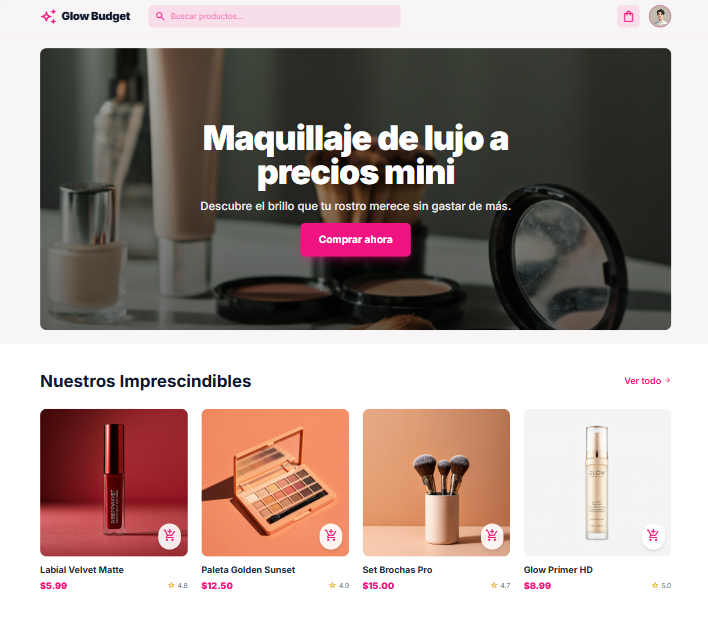
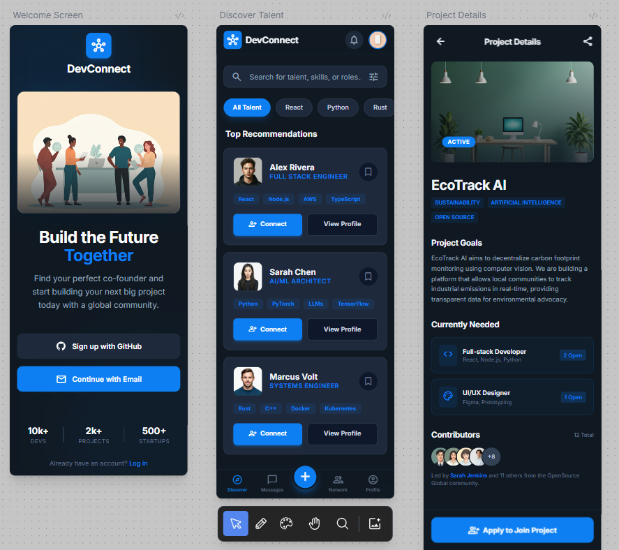
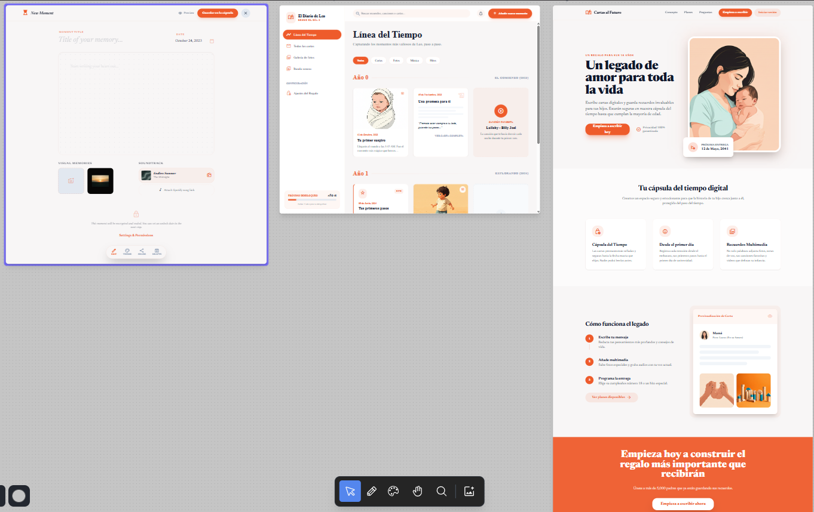
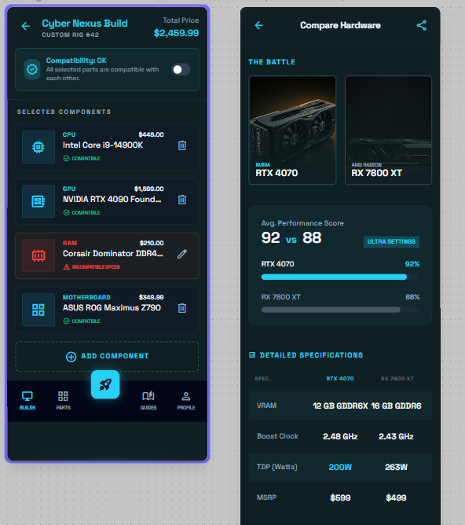

¿Quien soy?
Tengo 23 años y soy una entusiasta de la tecnología en constante evolución. Actualmente, estoy sumergida en el mundo del Análisis y Desarrollo de Software, combinando mi curiosidad lógica con mi creatividad para construir experiencias web funcionales y atractivas utilizando HTML, CSS y JavaScript.
Estudiante de Análisis y Desarrollo de Software con dominio de HTML, CSS y JavaScript. Poseo una sólida trayectoria de más de 4 años en atención al cliente bilingüe y gestión administrativa para empresas en EE. UU. Mi rol actual como Coordinadora Médica en una firma legal de Nueva York me ha dotado de habilidades críticas en organización de agendas, atención bajo presión y cumplimiento de procesos internacionales. Busco aplicar mi capacidad analítica y técnica en entornos de desarrollo de software.
- Maria Fernanda Gonzalez Diaz
Mis proyectos

Tienda de maquillaje
Mi primer proyecto es una pagina web de una tienda de maquillaje saludable para la piel de las mujeres.

DevConnect
DevConnect es una plataforma para conectar con desarrolladores de programacion de todo el mundo con los cuales poder crear proyectos.

Carta al Futuro
Esta es una plataforma de legado emocional para padres e hijos, donde el padre/madre deja cartas, audios, videos, canciones etc para el futuro, cosa que cuando tengan 18 años puedan verlo. Es un recuerdo tierno y lleno de amor para las familias.

Cyber Nexus Build
Cyber Nexus Build es una aplicación para ayudarte a armar el pc gamer de tus sueños, aca puedes ver que tan compatibles son las partes que quieres para tu pc, puedes comparar especificaciones y caracteristicas, y a su vez comparar precios del mercado.